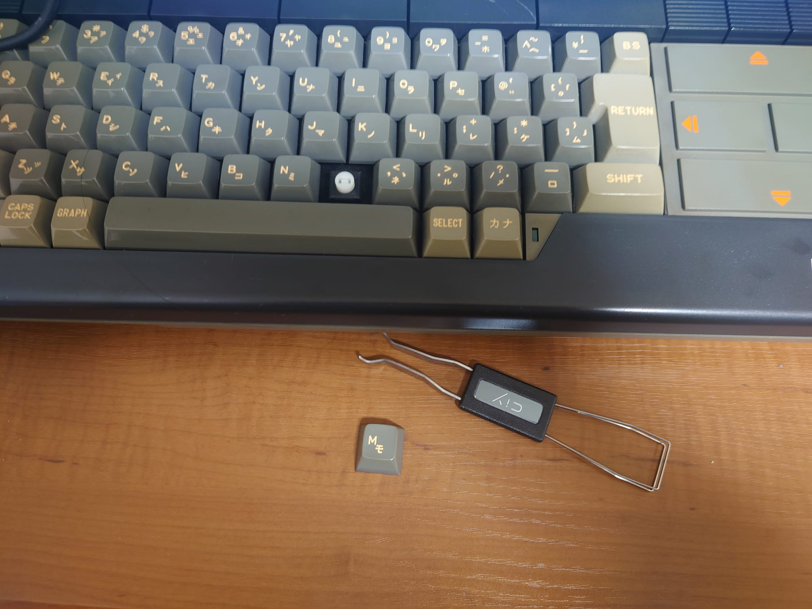
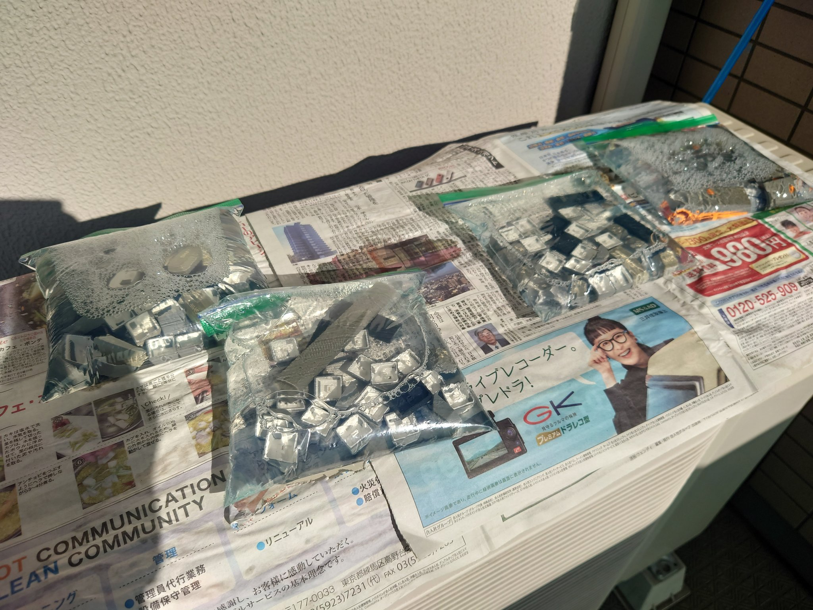
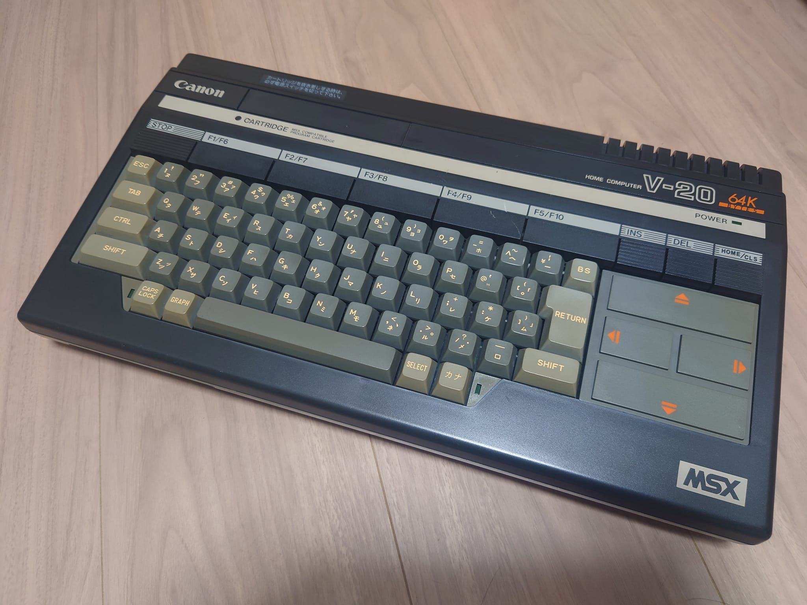
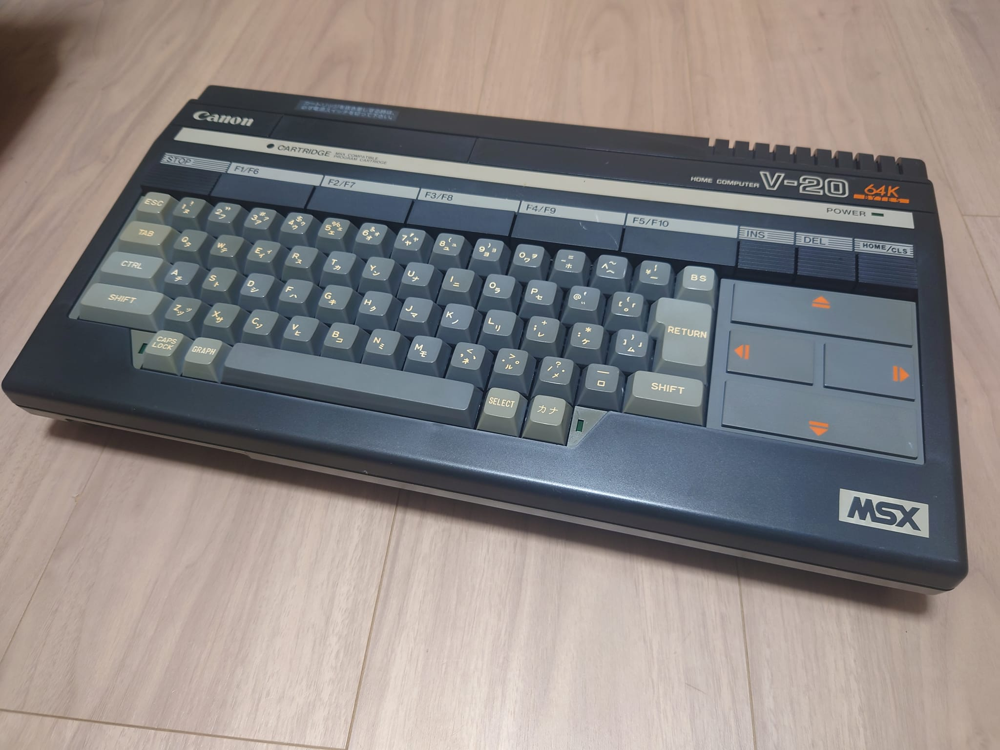

CANON V-20 メンテナンス 【お掃除と漂白】
カーソルキーはネジ止めされているカーソルキーのフレーム部品を取り外せば、キー部分が外れます。
他のキーは、引っ張ればとれるはめ込み式になっています。
一部の長いキーは、傾かないようにサポートする金属の補助部品が付いてるので、勢いよく引っ張ってしまうと、その金属部品が引っかかるフックを負ってしまう恐れがあるので要注意です。
ゲーミングキーボードなどのキーキャップを取り外す道具が使えますので、そういったものを使って慎重に取り外していきます。

取り外したキーを洗います。歯ブラシなどで表面にこびり付いた汚れを取っていきます。
その後、ジップロックの中に入れて、衣類用漂白剤 ワイドハイターEXパワー を 1:2 (ハイター:ぬるま湯) くらいで入れて、外の日向に置きます。
これで数時間。
ついでに、外装もウタマロなどを使って洗っていきます。
5時間位して、夕方になって日が入ってこなくなったので取り込みました。

これ↓が漂白前。

これ↓が漂白後。

かな/CapsのLED部分のグレーも少し茶色かったので、ここにはハイターを薄めずに塗りつけて、2時間くらい日向に置いておきました。
若干漂白できてるような気もします。外装は黒い部分が多いので、かなり熱くなっていたので2時間でやめておきました。変形したら嫌ですからね (^^;
とりあえず、V-20 のメンテナンスはここまでです。電解コンデンサの搭載量も少ない機種なので、コンデンサの付け替えメンテはやっていません。
[前へ]